Pedro Peterson · Desenvolvimento Web + Busca e Recuperação de Informação
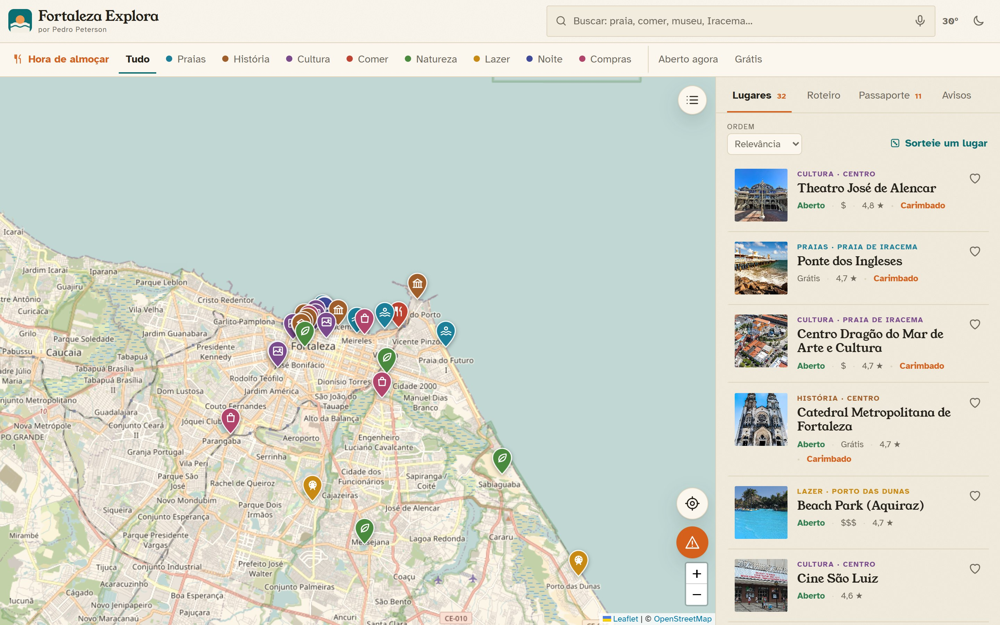
Boa tarde, eu sou o Pedro. Eu fiz o Fortaleza Explora, um aplicativo para responder uma pergunta simples: o que eu faço agora em Fortaleza? Ele junta duas matérias: Desenvolvimento Web, porque roda no navegador e dá para instalar no celular, e Busca e Recuperação de Informação, porque o coração dele é uma busca de lugares. Vou mostrar o problema, como eu pensei, o que eu usei e o que ainda falta.
Quem está em Fortaleza não sabe o que fazer agora
Está aberto?O horário muda tudo
Vai chover?O plano muda com o clima
Vale a pena ir?Mapas dizem “onde fica”, não “o que fazer”
Quando a gente vai a um lugar novo, as dúvidas são sempre as mesmas: está aberto? Vai chover? Vale a pena ir? Os mapas comuns dizem onde o lugar fica, mas não dizem o que fazer agora. Em Fortaleza isso pesa mais, porque o plano muda muito com o horário e com o clima. Foi essa a pergunta que guiou o projeto.
Um Waze, mas de lugares
BuscaEntende erro de digitação
Mapa e rotasTrês modos lado a lado
ContextoHora, sol, chuva e mar
ComunidadeAvisos que somem sozinhos
A proposta era fazer um aplicativo de busca, tipo um Waze de lugares interessantes de Fortaleza. Eu dividi em quatro partes: uma busca que entende erro de digitação, mapa e rotas, o contexto, que é hora, sol, chuva e mar, e a comunidade, com avisos que somem sozinhos, como no Waze.
Aprendi com apps do mundo todo
WazeInformação da comunidade, com validade
CitymapperComparar os modos de ir
SwarmPassaporte com selos
Apps de surfeMar em linguagem simples
Apps de fotoHora da luz boa
Guias de turismoCuradoria: poucos e bons
Eu não inventei tudo do zero. Olhei como outros apps resolvem problemas parecidos e peguei as ideias. Do Waze, a informação da comunidade com validade. Do Citymapper, comparar as formas de ir lado a lado. Do Swarm, o passaporte com selos. De apps de surfe, mostrar o mar de um jeito simples. De apps de foto, a hora da luz boa. E dos guias de turismo, poucos lugares bem escolhidos.
O Fortaleza Explora
Mapa, lista em estilo de guia e a sugestão do momento no topo.
Este é o resultado. À esquerda, o mapa com um pin para cada lugar. À direita, a lista, que eu desenhei parecida com um guia de revista: foto, categoria, nome e as informações principais. No topo, em laranja, fica a sugestão do momento: na hora do almoço ele sugere lugares para comer, perto do pôr do sol sugere mirantes, e se estiver chovendo mostra só lugares cobertos.
Três camadas, sem framework
InterfaceHTML + CSS + JS puros, mapa com Leaflet
LógicaMódulos testáveis sem mexer na tela
Dados32 lugares conferidos + 5 serviços abertos
112 KB de código próprio · sem servidor · hospedagem gratuita
Eu escolhi não usar framework, só HTML, CSS e JavaScript. Fica leve e mais fácil de eu explicar. O app tem três camadas: a interface, que é o que se vê, com o Leaflet para o mapa; a lógica, que são arquivos separados que eu consigo testar sozinhos; e os dados, com 32 lugares que eu conferi e cinco serviços abertos. Como tudo roda no navegador, não precisei de servidor, e a hospedagem é gratuita.
De onde vem cada informação
OpenStreetMapMapa e ruas
OSRMRotas
Overpass + NominatimLugares fora da base
Open-MeteoClima, UV, vento e mar
Wikimedia CommonsFotos com licença livre
Base curada32 lugares
Nenhum serviço pede chave ou cadastro.
O mapa e as ruas vêm do OpenStreetMap, que é como a Wikipédia dos mapas. As rotas vêm do OSRM. Para achar lugares que não estão na minha base, uso o Overpass e o Nominatim, também do OpenStreetMap. Clima, UV, vento e mar vêm do Open-Meteo. As fotos vêm do Wikimedia Commons, só com licença livre, e o app mostra o autor de cada uma. E tem a minha base com 32 lugares. Nenhum desses serviços pede chave ou cadastro.
Busca que tolera erros e vai além da base
Tira acentos e maiúsculas
Pontua por campo: nome vale mais que descrição
Entende sinônimos: “comer” → restaurantes
Aceita erro de digitação: “mercdo” acha “mercado”
Não tem na base? Procura em toda Fortaleza (“churrascaria”: 46 lugares)
Guarda o resultado por 24 h
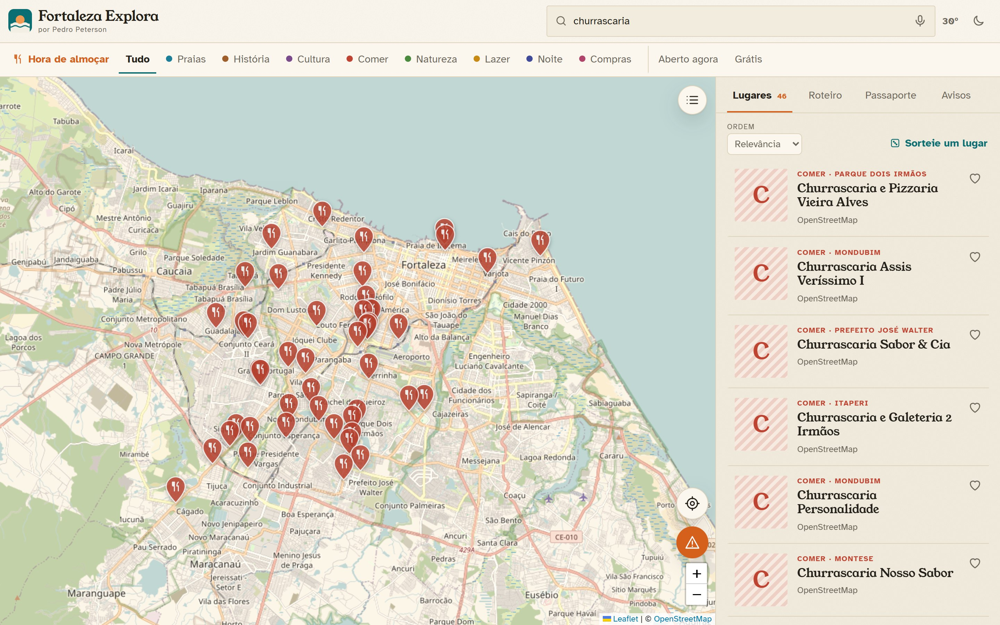
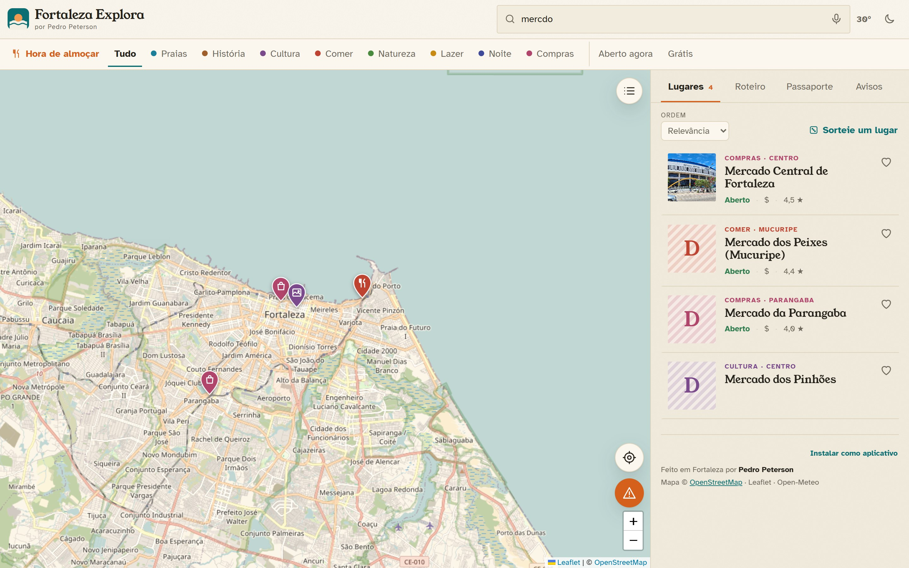
Esta é a parte mais ligada à matéria de Busca. Quando alguém digita, o app faz quatro coisas. Primeiro, ignora acento e maiúscula, então praça e Praça são a mesma coisa. Segundo, dá mais pontos se a palavra está no nome do que se está só na descrição. Terceiro, entende sinônimos: quem digita “comer” encontra restaurantes. Quarto, aceita erro de digitação, usando a distância de Levenshtein, que conta quantas letras são diferentes: “mercdo” está a uma letra de “mercado”. E tem o caso que eu mais gosto: “churrascaria” não está na minha base. Em vez de mostrar “nada encontrado”, o app procura em toda Fortaleza e achou 46 lugares. O resultado fica guardado por 24 horas, então repetir a busca é rápido.
O app muda com a hora, o sol e a chuva
Hora e pôr do sol calculados no próprio aparelho
Chovendo? Só lugares cobertos
Praias: ondas, água, UV e vento, com conselho simples
Sempre no horário de Fortaleza
Dados do mar são uma estimativa
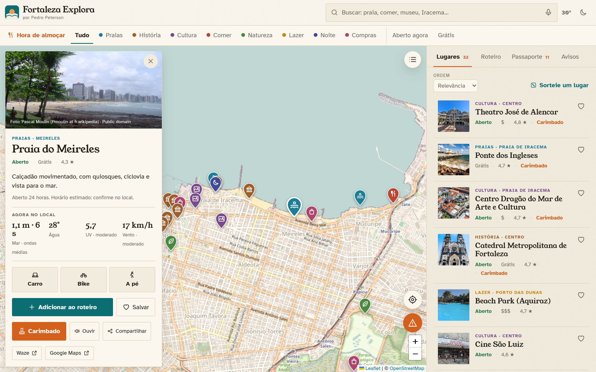
Este é o diferencial. A hora e o pôr do sol são calculados dentro do próprio aparelho, então funciona até sem internet. Se estiver chovendo, só aparecem lugares cobertos. Nas praias o app mostra ondas, temperatura da água, UV e vento, com um conselho simples, como “UV alto: passe protetor”. Tudo usa o horário de Fortaleza, então até um turista com o celular em outro fuso vê “aberto” ou “fechado” certo. Os dados do mar são uma estimativa, não vêm de um sensor na praia.
Como chegar e em que ordem visitar
Carro, bike e a pé comparados: 5 / 13 / 30 min
Hora de sair para ver o pôr do sol
Roteiro com várias paradas: o app sugere a melhor ordem
Começa pelo lugar mais próximo e desfaz os cruzamentos do caminho
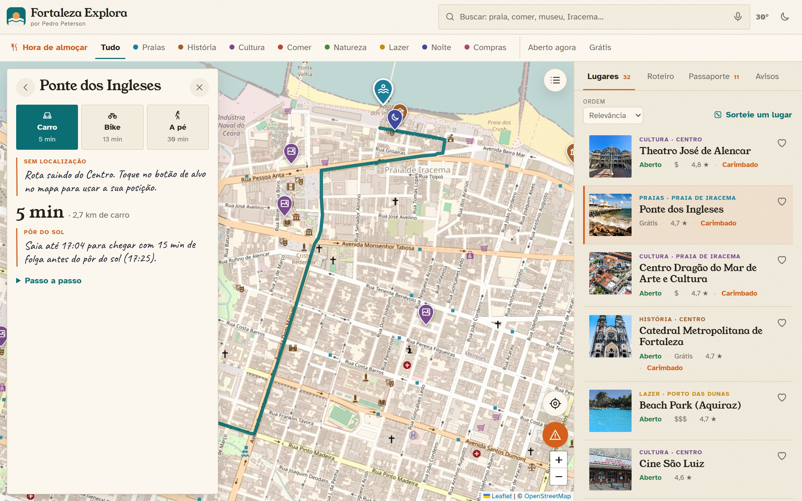
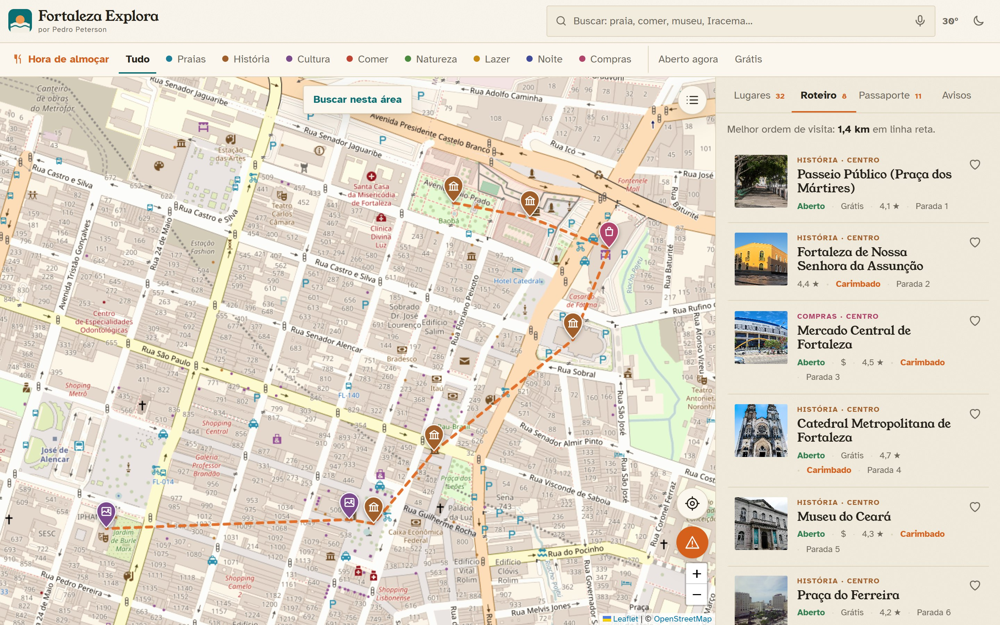
Aqui são duas funções. À esquerda, a rota: o app mostra carro, bike e a pé ao mesmo tempo, com o tempo de cada um, por exemplo 5, 13 e 30 minutos. Para o pôr do sol, ele diz a que horas você precisa sair. À direita, o roteiro: quando a pessoa escolhe vários lugares, a ordem da visita muda muito a distância. Eu usei um método simples: começar pelo lugar mais próximo e, depois, desfazer os cruzamentos do caminho. Não garante o melhor caminho possível, mas para poucas paradas fica rápido e bom.
Passaporte e cartão para Stories
“Já fui aqui” gera carimbo com data
Progresso por categoria e 10 selos
Dados só no aparelho
Cartão para Stories desenhado pelo próprio app
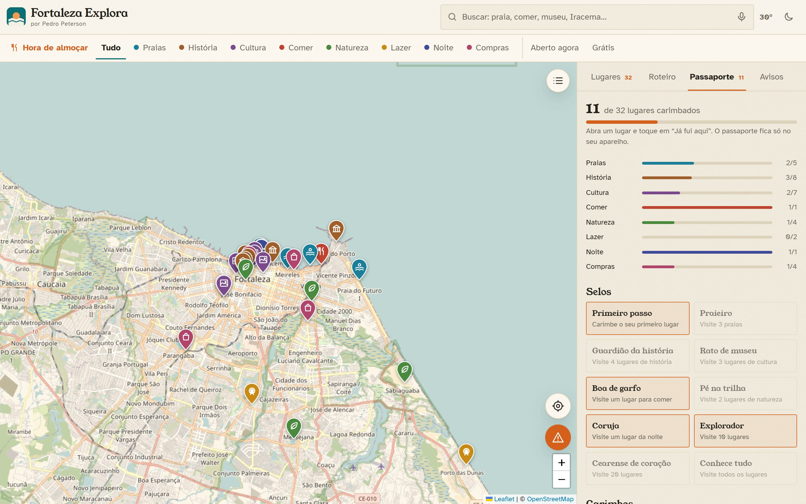
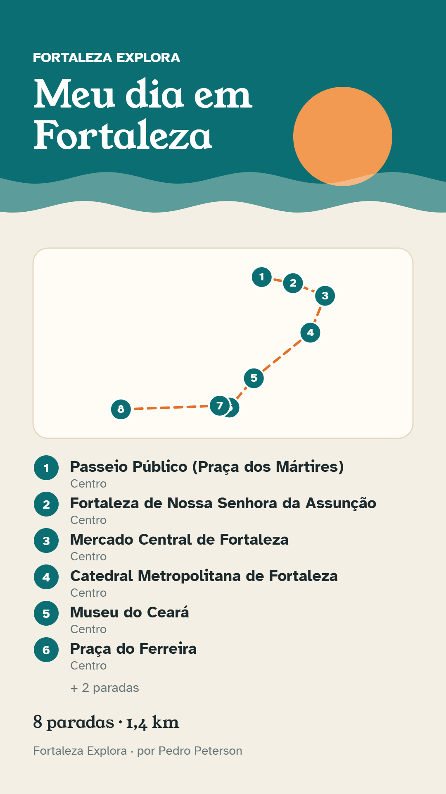
Um app precisa de um motivo para a pessoa voltar. Do Swarm eu peguei o passaporte: em cada lugar a pessoa toca em “Já fui aqui” e ganha um carimbo com a data. O app mostra o progresso por categoria e dez selos, como o “Praieiro” para quem visita três praias. Isso fica só no aparelho dela. Já o cartão para Stories é uma imagem que o app desenha com o roteiro montado: título, mapa do caminho e a lista de paradas. É divulgação feita pelos próprios usuários.
Como eu cuidei do visual
Cores da cidade: papel, verde do mar, laranja do sol
Três fontes, cada uma com uma função
Fotos reais com crédito
Jangada em xilogravura, como o cordel
Lista com cara de guia de revista
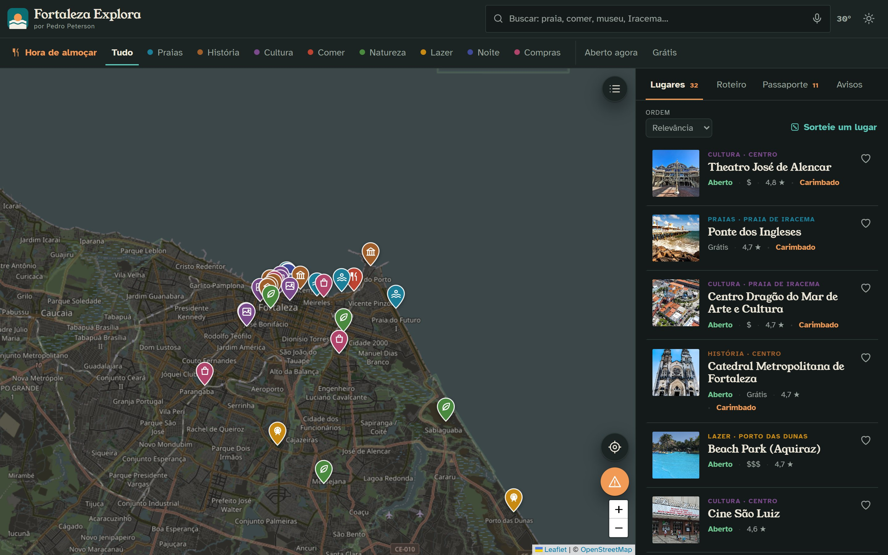
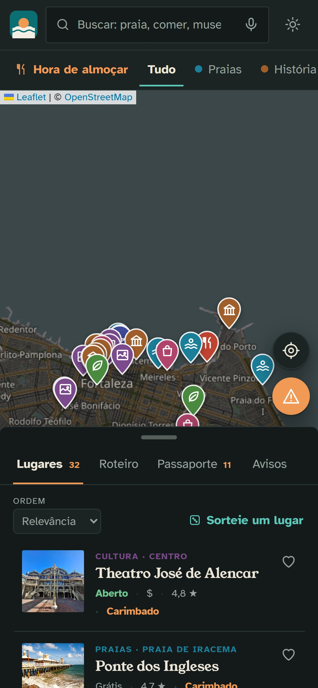
Eu queria que o app tivesse cara própria e não parecesse um modelo pronto. Escolhi cores tiradas da cidade: papel quente, verde do mar e laranja do sol. Usei três fontes, cada uma com uma função: uma para os títulos, uma bem legível para o texto e uma de letra à mão para as dicas. Coloquei fotos reais com crédito e desenhei uma jangada em estilo de xilogravura, que lembra o cordel do Ceará. E a lista tem linhas finas, como um índice de guia, em vez de cartões todos iguais.
Instala como app e funciona sem internet
PWA: instala na tela inicial
Service worker guarda app, base e fontes
Gaveta que acompanha o dedo
Busca por voz, guia por voz, “perto de mim”
GPS e microfone só quando a pessoa toca
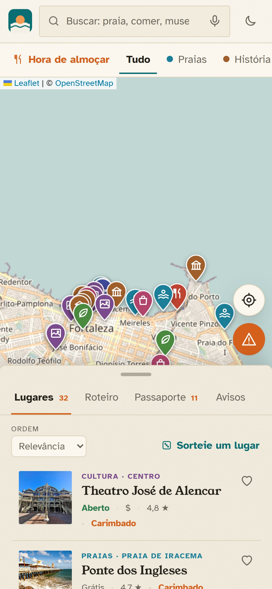
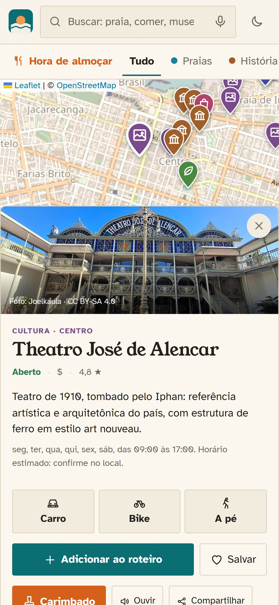
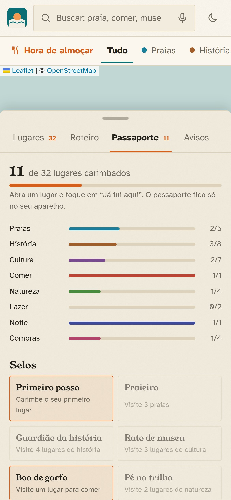
Como a maioria vai usar no celular, eu pensei nele primeiro. É um PWA, ou seja, dá para instalar na tela inicial e abrir sem a barra do navegador. O app guarda os arquivos no aparelho, então abre até sem internet. A lista é uma gaveta que acompanha o dedo: empurra para ver o mapa, puxa para ver a lista. Tem busca por voz, um guia que fala quando você chega perto de um lugar do roteiro e o botão “perto de mim”. A localização e o microfone só são pedidos quando a pessoa toca nos botões.
Como garanti que os dados são confiáveis
Posições conferidas em 2 fontes (OSM e Wikipédia)
Erros iniciais de até 1,6 km corrigidos
27 fotos com licença livre e crédito
O que não confirmei, tirei do app
27 testes automáticos a cada publicação
Horários continuam estimados (o app avisa)
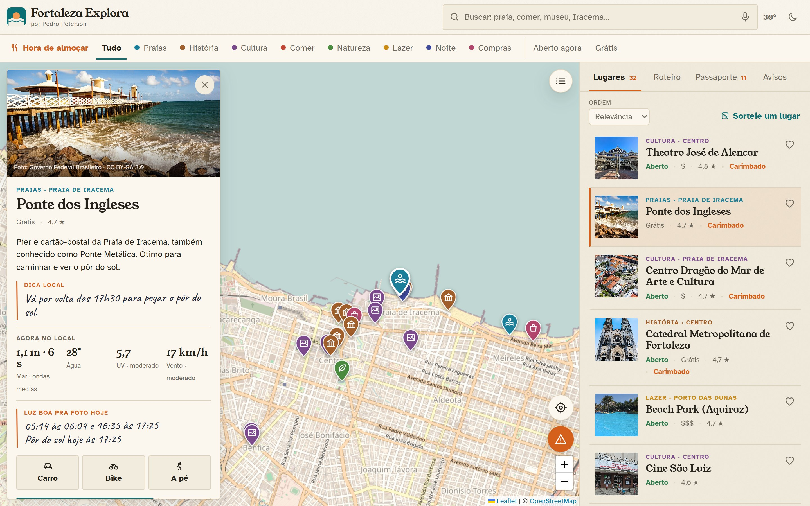
Num app de turismo, um pin no lugar errado é o erro mais visível. Por isso eu conferi cada posição com duas fontes, o OpenStreetMap e a Wikipédia. Meus números iniciais erravam até 1,6 km, como no Farol do Mucuripe, e eu corrigi todos. As 27 fotos têm licença livre e mostram o autor. Teve um caso curioso: a Wikipédia apontava um forte em Portugal no lugar da Fortaleza de Nossa Senhora da Assunção, e eu só percebi porque comparei as coordenadas. O que eu não consegui confirmar, tirei do app. Também tenho 27 testes automáticos que rodam a cada publicação. Os horários de funcionamento ainda são estimados, e o app avisa isso.
Se um teste falha, a versão antiga continua no ar.
petersoncodedev.github.io/fortaleza-explora
Para publicar eu uso o GitHub Pages, que é gratuito. Funciona assim: eu envio o código para o GitHub, ele roda os 27 testes e, se tudo passar, publica o site com https, que é necessário para o GPS e para instalar o app. Se algum teste falhar, a versão antiga continua no ar. O endereço está na tela e o código é aberto. Quem quiser pode abrir no celular agora.
O que ainda falta, e eu sei disso
Horários estimados: confirmar no local
Avisos só no aparelho (falta servidor)
Serviços gratuitos podem demorar
5 lugares sem foto
Testar em mais celulares
Próximos passos: servidor, inglês e espanhol, medir a busca
Quero ser sincero sobre os limites. Os horários são estimados, e o app avisa para confirmar no local. Os avisos da comunidade ficam só no aparelho de quem criou, porque eu não tenho servidor; esse é o primeiro próximo passo. Os serviços gratuitos às vezes demoram. Cinco lugares ficaram sem foto, porque não achei imagem livre adequada. E eu ainda quero testar em mais celulares. Nos próximos passos, quero ter o servidor, versões em inglês e espanhol e medir a qualidade da busca.
Como eu trabalhei
Eu decidiO tema, as funções e o que entra no app
Eu conferiCada posição e foto, comparada com fontes abertas
Eu aprendiComo uma busca funciona por dentro e como um app roda sem servidor
Tudo é código aberto e os créditos estão dentro do app.
Para fechar, como foi o meu processo. Eu escolhi o tema, decidi o que entra no app e o que fica de fora, e defini cada função. Depois conferi os dados um por um, comparando com fontes abertas, e criei testes para não quebrar o que já funcionava. O que eu mais aprendi foi como funciona uma busca por dentro e como um app consegue funcionar sem servidor. Tudo é código aberto e os créditos estão dentro do app.
Obrigado!
Abra no celular e teste agora
petersoncodedev.github.io/fortaleza-explora
Perguntas?
Obrigado por ouvirem. O endereço do app está na tela, e quem quiser pode abrir no celular e testar agora. Fico à disposição para perguntas sobre a busca, os dados, o visual ou qualquer parte do código.